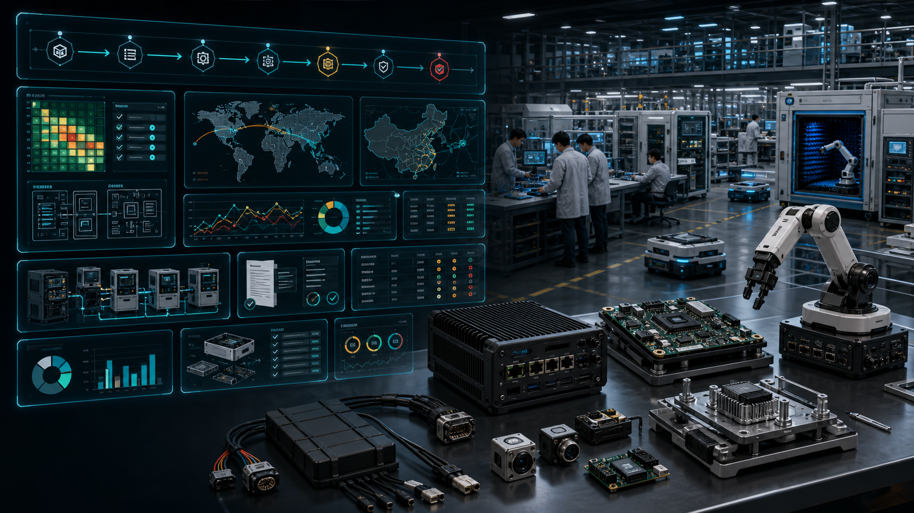

NPI Gates
EVT、DVT、PVT、pilot yield、locked BOM、DFM / DFT 和 CM handoff。
Pitch 31 · Prototype-To-SKU Foundry
比赛 demo 不是产品。ScaleFoundry 把 Qualcomm 机器人原型变成可试产、可认证、可维修、可长期供应的 robot compute SKU：EVT、DVT、PVT、DFM、认证证据、BOM 生命周期和制造伙伴交接一体化。
00 · Five-Thread Research
五条研究线说明：硬件必须经过 EVT / DVT / PVT；认证应当做成 evidence workflow；BOM、PCN、FRU、备件和电池寿命决定 7-15 年部署；Qualcomm 生态需要 China lane 和 overseas lane；最可卖的产品是 robot platform productization。
EVT、DVT、PVT、pilot yield、locked BOM、DFM / DFT 和 CM handoff。
FCC、CE / UKCA、NRTL、EMC、wireless、battery、robot safety 证据流。
7-15 年可供应、PCN/PDN、FRU、备件、电池可替换和材料护照。
中国 lane 做速度和成本，海外 lane 做 regulated / long-lifecycle deployment。
Audit、Devkit-to-Product Sprint、Certification Pack、Launch Pack、Managed Ops。

01 · Manufacturing Readiness Gates
ScaleFoundry 不把 prototype 直接包装成“量产”。它让每个阶段有明确 exit criteria、测试证据、BOM 状态、夹具、良率和变更控制。
BOM 风险、compute choice、热、电源、I/O、认证路径和 DFM gap。
bring-up、接口、电源、热、firmware、早期 test point 和 debug access。
可靠性、EMC pre-scan、环境测试、safety case、fixture v1。
小批试产、yield、MES traceability、golden sample、CM handoff。
locked BOM、AVL、ECO、service kit、warranty 和 field feedback。
02 · Evidence Rooms
ScaleFoundry 生成的不是泛泛 PPT，而是客户、实验室、制造伙伴、投资人和 Qualcomm 生态伙伴能检查的证据资产。
test pads、JTAG、flash path、service port、thermal margin、cable strain relief。
flying probe、functional jig、ICT、boundary scan、AOI/AXI 和 MES data。
FCC、CE、UKCA、NRTL、EMC、battery、label、manual 和 DoC index。
hazard analysis、functional safety、ISO 10218、E-stop、safe state。
longevity score、BOM risk、PCN/PDN、FRU graph 和 spare kit。
RoHS、REACH、WEEE、SCIP、battery passport 和 future product passport。
03 · Partner Lane Manager
ScaleFoundry 把产品路线拆成 China lane 和 overseas / regulated lane。前者追求速度、成本、本地机器人 OEM 和中文生态；后者追求严格 BOM、长生命周期、TAA / NDAA / India / Taiwan manufacturing 和合规客户。
04 · Qualcomm Production Value
ScaleFoundry 让 Qualcomm 从“芯片和开发板”进入产品化证据链：传感器集成、热设计、motion I/O、OS、AI Hub、OTA、认证路径、供应链和生命周期支持。
ScaleFoundry 的目标不是把 demo 包装得更漂亮，而是让每一个 RobotMac 核心都能变成可制造、可认证、可维修、可复购的产品 SKU。